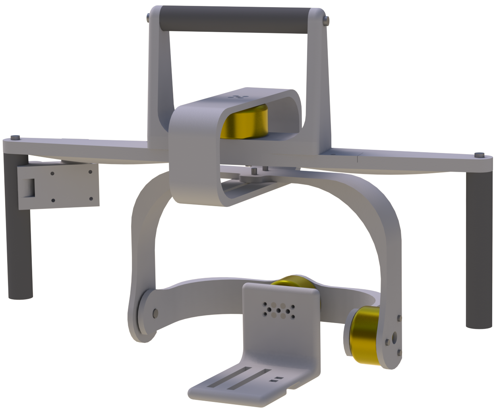

OpenSAM

Welcome to OpenSAM, our 3Dprinted self-built three Axis stabilizer.
It is handheld and the entire mechanical construct is built using 3D printed parts. Brushless motors ensure the camera is stable and they can be controlled using a joystick. The design is developed by three engineering students at the Technical University of Denmark.
Now gimbals like this may exist in plenty, but we think ours is unique because of its use of additive manufacturing. That makes the system very cheap to build and easy to reconstruct. All the files are open source and you can download them here.
Check out the OpenSAM Manual (PDF) for more information.
Watch our footage made using OpenSAM
You can watch a short demonstration video on YouTube or on Vimeo.
Authors and Contributors
OpenSAM was developed by OHM, Oliver Topp, Henning Si Høj and Mathias Grelck Johnsen from the Technical University of Denmark.
Support or Contact
Contact us at if you have any questions.